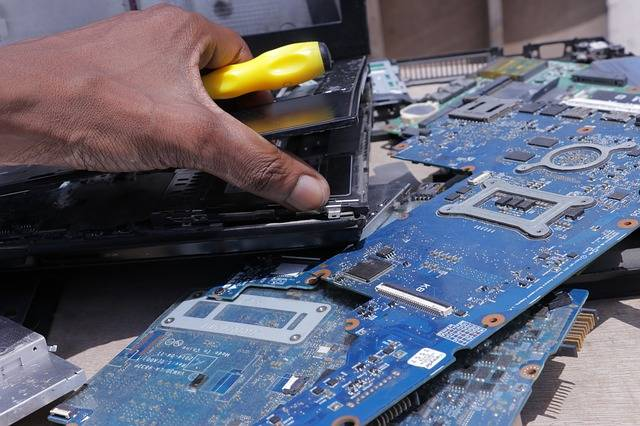
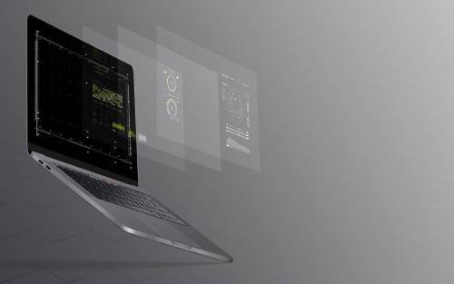

שנים רבות של עבודה עם מחשבים ניידים, נייחים, רכיבים, מסכים, תקלות חומרה ואבחון מקצועי.
מעבדת מחשבים מקצועית • ניסיון, שקיפות ושירות
מעל 25 שנות ניסיון
תיקוני אלקטרוניקה ברמת הרכיב
נותני שירות ליבואני מחשבים
שירות לרשתות מוכרות
מעבדת מחשבים מקצועית לתיקון מחשבים ניידים ונייחים
Repair-Lab היא מעבדה מקצועית לתיקון מחשבים ניידים ונייחים, עם ניסיון רב בטיפול בתקלות חומרה, החלפת חלקים, תיקוני מסכים ואבחון תקלות מורכבות. העבודה במעבדה מתבצעת בגישה מסודרת: בודקים את מקור התקלה, מסבירים ללקוח את האפשרויות ומציעים פתרון מקצועי שמתאים למצב המחשב, לדגם ולשימוש היומיומי שלו.
ידע וציוד מתקדם שמאפשרים לבדוק תקלות עמוקות יותר, מעבר להחלפה בסיסית של חלקים.
נבחרנו כנותני השירות למחשבים המיובאים לישראל על ידי חברת אולטרייד.
נבחרנו כנותני השירות למחשבים המיובאים על ידי רשת אופיס דיפו.

Repair-Lab מטפלת במגוון תקלות במחשבים ניידים ונייחים: מסכים שבורים, מסכים מרצדים, מחשבים שאינם נדלקים, תקלות טעינה, הרחבת זיכרון, התקנת SSD, החלפת סוללה, תקלות מקלדת, נזקי נוזלים ותקלות חומרה נוספות. הדגש הוא על אבחון יסודי לפני ביצוע העבודה, התאמת הפתרון לדגם המחשב ולתקלה בפועל, ושירות ברור שמאפשר ללקוח להבין מה קורה במחשב ומהן אפשרויות הטיפול.
השירותים שלנו
השירותים שלנו:
החלפת מסך למחשב נייד
מסך של מחשב נייד עלול להישבר מנפילה, לחץ בתיק, סגירה על חפץ קטן, מכה ישירה או בלאי של הצירים והחיבורים הפנימיים. לפעמים הבעיה נראית כמו שבר ברור, ולפעמים היא מופיעה כפסים, כתמים, ריצוד, תאורה חלשה או תצוגה שנעלמת בזווית מסוימת.
אנחנו בודקים קודם את דגם המחשב, סוג המסך, מצב המסגרת, הצירים, כבל המסך וחיבורי התצוגה. בהתאם לממצאים, נוכל לקבוע האם מקור התקלה הוא במסך עצמו, בכבל פנימי, בחיבור או ברכיב אחר. כאשר נדרשת החלפת מסך למחשב נייד, אנו מתאימים את החלק לדגם ומבצעים את העבודה בצורה נקייה ומדויקת.
תיקון מחשבים ניידים שלא נדלקים או נתקעים
מחשב נייד שאינו נדלק, נתקע בזמן עבודה או נכבה באופן פתאומי יכול לסבול ממגוון תקלות: ספק כוח לא תקין, שקע טעינה פגום, סוללה חלשה, התחממות, תקלה בזיכרון, תקלה בכונן האחסון או בעיה בלוח האלקטרוני.
אנחנו מתחילים בבדיקת שרשרת החשמל, המטען, שקע הטעינה, הסוללה, הזיכרון, הכונן ומערכת הקירור. לאחר מכן בודקים אם קיימים סימנים לקצר, התחממות או רכיב תקול. בהתאם לתוצאה, נוכל להציע טיפול מתאים: החלפת רכיב, תיקון נקודתי, ניקוי מערכת קירור או בדיקה מתקדמת יותר ברמת הרכיב.

הרחבת זיכרון למחשב נייד
מחשב איטי לא תמיד צריך החלפה. במקרים רבים, כאשר המחשב מתקשה לפתוח כמה תוכנות יחד, הדפדפן עובד לאט, קבצים נטענים באיטיות או מערכת ההפעלה מגיבה בעיכוב, ייתכן שכמות זיכרון העבודה אינה מספיקה לשימוש הנוכחי.
אנחנו בודקים את דגם המחשב, סוג הזיכרון הנתמך, כמות הזיכרון הקיימת, מספר החריצים הפנויים והכמות המקסימלית שהמחשב יכול לקבל. בהתאם לבדיקה, נמליץ האם הרחבת RAM מתאימה, באיזו כמות כדאי לשדרג והאם כדאי לשלב גם התקנת SSD לשיפור מהירות העבודה.

החלפת מסך מגע ללפטופ
מסך מגע במחשב נייד משלב בין תצוגה רגילה לבין שכבת מגע רגישה. תקלה במסך כזה יכולה להופיע כשבר בזכוכית, מגע שאינו מגיב, תגובה לא מדויקת, ריצוד, כתמי תצוגה או מצב שבו התמונה פועלת אך המגע אינו מזוהה.
אנחנו בודקים את דגם הלפטופ, סוג פאנל התצוגה, שכבת המגע, הכבלים, המסגרת והצירים. בהתאם למבנה המחשב ולסוג התקלה, נקבע האם יש צורך בהחלפת מכלול מסך מלא, החלפת חלק נקודתי או בדיקה נוספת של חיבורי המגע והבקרה.
מעבדה, ציוד וידע מקצועי
תיקון נכון מתחיל באבחון נכון
במחשבים ניידים, תקלה אחת יכולה להיראות כמו תקלה אחרת. מסך שחור יכול להיות קשור למסך, לכבל פנימי, לכרטיס גרפי או למערכת ההפעלה. מחשב איטי יכול להיות קשור לזיכרון, לכונן אחסון, להתחממות או לתוכנות שרצות ברקע. לכן אנחנו שמים דגש על בדיקה מסודרת לפני בחירת דרך הטיפול.

טיפים לשמירה על המחשב
כמה פעולות פשוטות שיכולות להפחית תקלות במסך, במגע ובמחשב כולו
לא לסגור את המסך בכוח
סגירה חזקה מדי, במיוחד כאשר יש עט, כבל, אוזנייה או לכלוך בין המקלדת למסך, עלולה לגרום לשבר במסך או ללחץ נקודתי שמוביל לכתמים ופסים בתצוגה.
לשמור על הצירים
פתיחה מהירה מצד אחד בלבד יוצרת עומס על הצירים ועל מסגרת המסך. מומלץ לפתוח את המסך בעדינות מהמרכז, במיוחד במחשבים דקים וקלים.
לא לנקות מסך עם חומר חזק
חומרי ניקוי חריפים עלולים לפגוע בציפוי המסך או בשכבת המגע. עדיף להשתמש במטלית מיקרופייבר ובחומר ייעודי למסכים, בכמות קטנה וללא ריסוס ישיר על המחשב.
להימנע מחום ולחות
חום גבוה, שמש ישירה או לחות עלולים לפגוע בסוללה, במסך, בלוח וברכיבים פנימיים. לא מומלץ להשאיר מחשב ברכב סגור או ליד חלון עם שמש חזקה.
לא להתעלם מריצוד או מסך שחור
ריצוד, מסך לבן, מסך שחור או תצוגה שמופיעה ונעלמת הם סימנים שכדאי לבדוק מוקדם. בדיקה בזמן יכולה לעזור להבין את מקור התקלה ולבחור טיפול מתאים.
לגבות מידע באופן קבוע
גם כאשר התקלה נראית קשורה למסך בלבד, תמיד כדאי לשמור גיבוי של קבצים חשובים. מחשב הוא כלי עבודה, והמידע שבו לפעמים חשוב יותר מהרכיב התקול עצמו.
שירות איסוף והחזרה
שולחים את המחשב התקול לבדיקה מקצועית — ומקבלים אותו בחזרה מסודר
Repair-Lab מאפשרת לתאם איסוף והחזרה של מחשב תקול מבית הלקוח או מבית העסק. השירות מתאים ללקוחות פרטיים, סטודנטים, בעלי עסקים וארגונים שמעדיפים להעביר את המחשב למעבדה בצורה נוחה, מסודרת ובתיאום מראש.
לאחר קבלת המחשב במעבדה, אנחנו מבצעים בדיקה מקצועית, מזהים את מקור התקלה ומעדכנים את הלקוח באפשרויות הטיפול. כך ניתן ליהנות משירות מעבדה מקצועי גם כאשר נוח יותר לבצע את התהליך באמצעות איסוף והחזרה.
עוד שירותים במעבדה
מענה רחב למחשבים ניידים ונייחים
לצד השירותים המרכזיים, אנחנו מטפלים במגוון תקלות ושדרוגים למחשבים ניידים ונייחים. בכל פנייה אנחנו בודקים את דגם המחשב, אופי התקלה והשימוש בפועל, ובהתאם לכך מתאימים את דרך הטיפול הנכונה.
✓החלפת מקלדת במחשב נייד
✓החלפת משטח עכבר במחשב נייד
✓התקנת SSD לשיפור מהירות העבודה
✓טיפול בתקלות טעינה ושקע טעינה
✓החלפת סוללה למחשב נייד
✓ניקוי מערכת קירור ובדיקת התחממות
✓בדיקת נזקי נוזלים וקורוזיה
✓התקנות תוכנה ובדיקות מערכת
✓אבחון תקלות חומרה במחשבים נייחים
רוצים להכיר את הפעילות של המעבדה גם ברשת?
אפשר לעקוב אחרי עדכונים, עבודות, שירותים ותכנים נוספים בעמוד הפייסבוק של Repair-Lab.